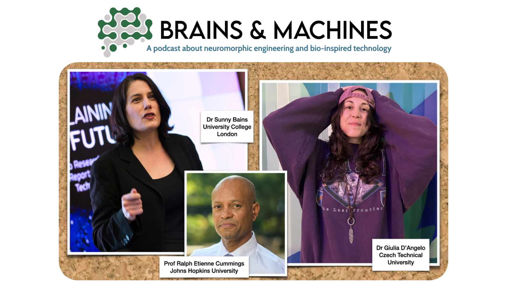

Launched in September 2023, this podcast explores the cutting edge of neuromorphic engineering, brain-inspired robotics, and related emerging technologies. Each episode features an in-depth interview with a leading researcher in the field, offering unique insights into their work, current challenges, and the broader implications for science and society. Following the interview, we dive deeper into the key issues raised, unpacking complex ideas and exploring their relevance to real-world applications. The podcast is produced in collaboration with EETimes Current, bringing technical rigor together with accessible, engaging discussion for a wide audience of professionals, students, and tech enthusiasts.